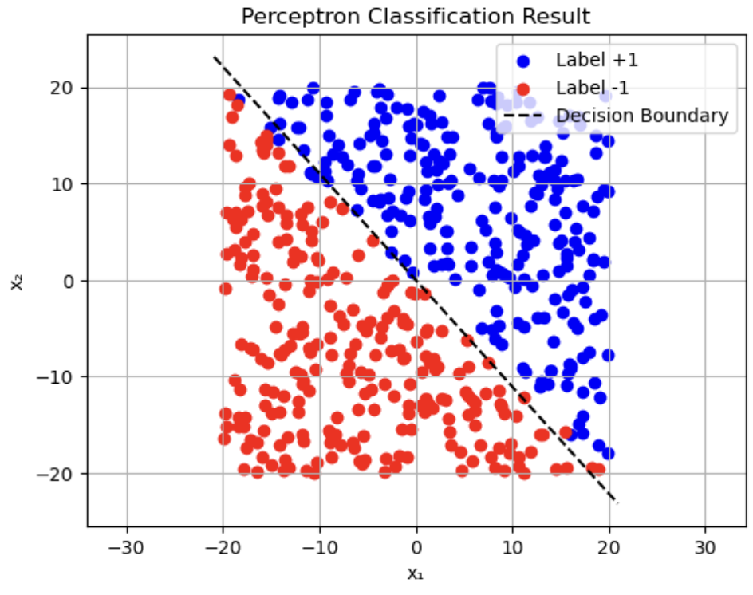
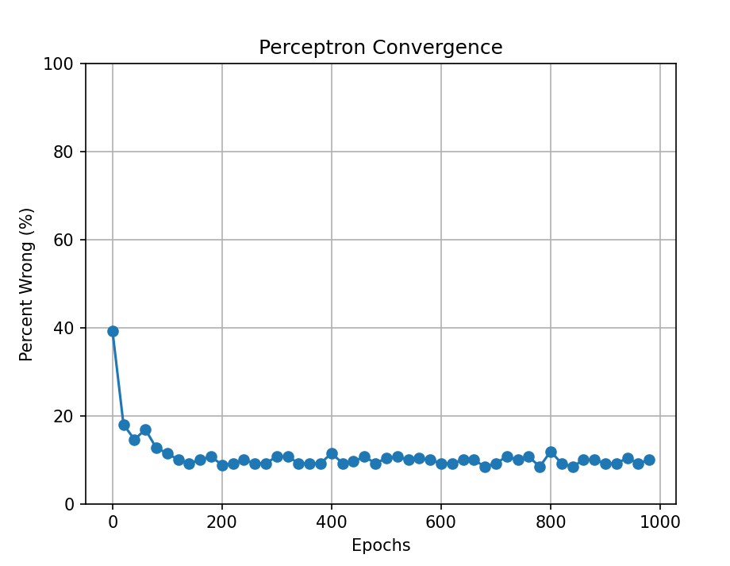
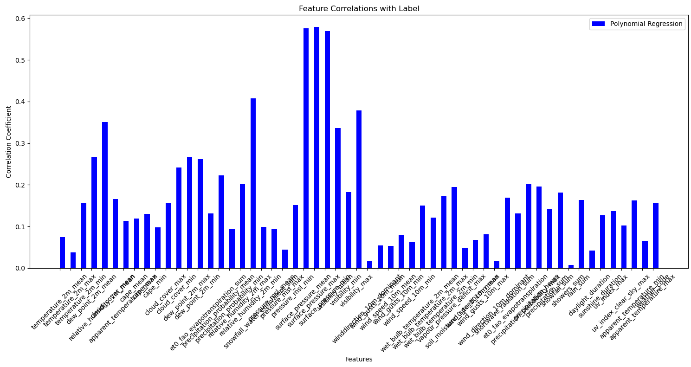
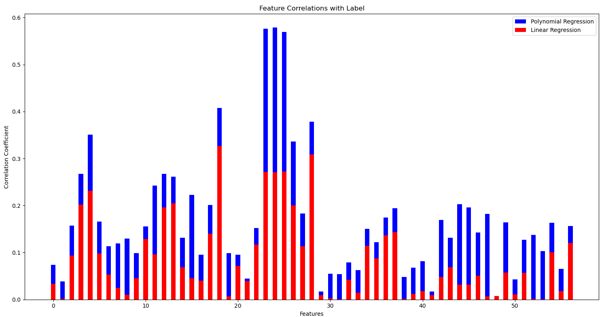

The Perceptron

The Perceptron is a type of machine learning algorithm that falls under the category of a linear classifier. It takes data, which can be multi-dimensional, and finds correlations during training to classify the data into two binary categories, labeling them as either -1 or 1. The algorithm takes a set of numerical inputs, multiplies each by weight, called theta not, and adds them together along with a bias term to produce a binary output. Our program uses this algorithm to classify whether a city is coastal (1) or inland (-1), and is trained on hundreds of cities to find a correlation.
Perceptron Convergence with Normalization

This graph tracks the iterations of the perceptron model as from the point where it starts as it constantly improves its result. As the perceptron changes its weights, epoch by epoch, the graph's percent error decreases and the line falls as the model gets more accurate. Each epoch is every change that the perceptron makes by adjusting its normal (thera 0). The accuracy of the perceptron to linearly separate the data points increases as it is trained on more data as it optimizes the linear separation.
Feature Correlations per Data Type

This graph shows the level of correlation that the perceptron could find during training based on the type of data given. The 42 different dimensions of data are acquired from OpenMeteo API, and the perceptron model is trained on this data. The higher bars represent data that is more significant to finding a correlation between the weather data and the location of the city.
Feature Correlations Given Number of Features

The above graph illustrates a change that we made in the perceptron model to increase the accuracy of the model. By adjusting the linear classifier from just a line to become a higher degree polynomial, the data, which was not linearly separable, could be divided in a more accurate way. This means that the correlation of the data to the location of the city was increased, making the model more precise.